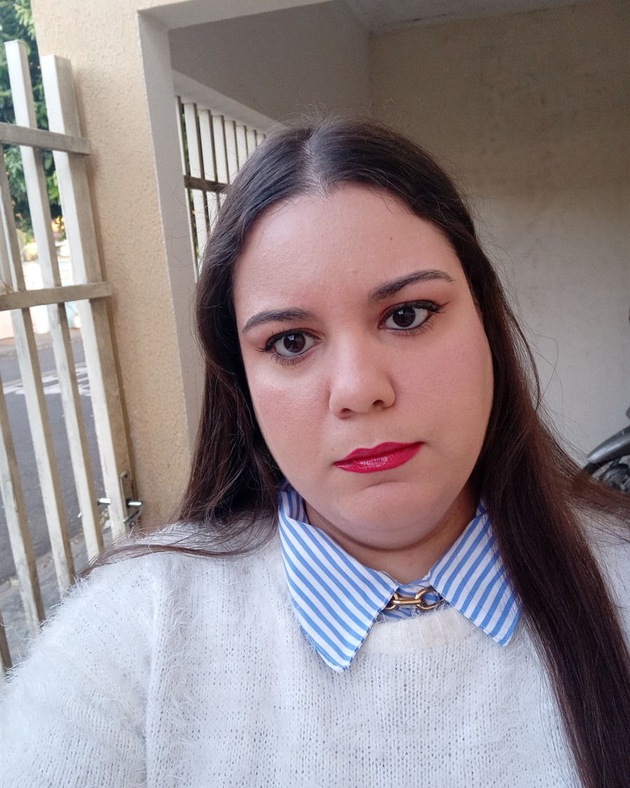

01
S.O.S: Sistema Orçamentário Simplificado
Trabalho de conclusão de curso: plataforma web de orçamentos para uma empresa de publicidade e comunicação visual, com controle de estoque e controle financeiro integrados.
Trabalhos e experiências
Nesta seção, apresento atividades desenvolvidas ao longo da minha formação em Desenvolvimento de Sistemas para Web, com o objetivo de demonstrar o aprendizado e a aplicação prática dos conteúdos estudados.
Além dos trabalhos, a página disponibiliza reprodutores de áudio e de vídeo, que complementam a apresentação do portfólio e permitem acompanhar o material de forma interativa.

Trabalho de conclusão de curso: plataforma web de orçamentos para uma empresa de publicidade e comunicação visual, com controle de estoque e controle financeiro integrados.
Projeto em grupo da disciplina de Banco de Dados 2: sistema voltado para confeitarias, com modelagem de dados e uso de Oracle e PL/SQL.
Uma apresentação em áudio para complementar meu portfólio.
Confira uma apresentação visual do meu trabalho.
Se quiser saber mais sobre algum projeto ou tirar dúvidas, envie uma mensagem.
Enviar mensagem